来源：https://gwq4c5gvtwq.feishu.cn/docx/XrRvdOo4pocodMxYS65cxihPnNb
大家好，我是波光，初入淘金的萌新一枚，90创业者，一家新媒体公司小老板，也是一个虽然肚子很大，但是四肢很短的矮胖子。这是我加入淘金的第一篇文章，之前一直在潜水，疯狂汲取圈友们的分享心得，再加上自己文字功底欠佳，所以一直没敢动笔输出自己的想法，直到连接到很多淘金的圈友，互相了解之后，他们觉得我的这些从业经验，或多或少的对自己有点帮助，所以一直鼓励我，把我的个人经历来做成一篇帖子，给大家做个分享，有了圈友们的支持与帮助，所以我鼓足勇气，硬着头皮的写下来这篇文章，也希望更多的圈友，给淘金的小萌新，多一点鼓励。
这里也郑重的向驴哥、木子田、毛总等各个淘金圈友，协助我完善这篇文章表示真诚的感谢！！！
关于多多视频，一定有大哥比我做优秀，但是考虑到可能有些圈友还是有点陌生，所以在这里，我简单的介绍下多多视频，多多视频是拼多多旗下的短视频平台，就在拼多多APP里面，一级入口，资源位很好，相比较其他平台，拼多多更加宽容，个人做的话不需要实名，下载多多进宝，绑定好PID就可以了，没有所谓的账号权重，不用做垂直，最重要的是，可以直接搬运。圈内有好几位大佬分享过个人做经验，我也认认真真的看完了，非常受用，个人想做的话，强烈建议大家去学习一下，我今天分享更多是团队的玩法。
多多视频跟其他短视频平台一样，也是分了3大板块：
1.直播：可才艺，可带货。
2.内容：流量收益。
3.带货：cps佣金。
不过多多视频的内容流量和带货流量是完全分开的，我今天主要分享多多视频的带货板块的玩法。
下面正文我将会从，自我介绍，一家多多MCN机构的运营经验，详细的操作流程，以及思考总结4个板块，开始今天的分享。
先来个简单的自我介绍吧。
我是18年转型做短视频的，之前是枚摄像师，参与拍摄过一些央视纪录片。
19年跟着抖音做短视频电商，年底开始搞鲁班。
20年去义乌拿到一个小目标的投资，专门做鲁班，后来转到千川，最好的成绩是，10天做了1500万GMV，也在当时，接触到了我现在在做的项目，多多视频。
22年回到苏州，在网上连接到了一位大佬，并入了他的门徒，（由于做的不好，就不说出来给师傅抹黑了），目前，公司项目有在做中视频，本地生活，和多多视频。
（不确定以后能赚钱）
啰嗦了半天，终于可以开篇了，接下来就来开始进入到今天的正题，从我是如何接触多多，到成长为一个多多MCN机构老板，如果说你也想往这条路上面去走，以下我的经历分享，或许会对你有帮助。
21年年初，我们的鲁班跑的还是风生水起，公司规模也扩大到了7-80人，
（义乌公司一角）
当时义乌的一位好友老王，跟我提了这个多多视频的项目，说实话，当时我真的是看不上~不是飘了，一是个人当时不喜欢索马里电商这个平台，二是他给我看的数据，一个月的佣金，还没有我一个员工的工资高，所以就没太在意，也看了他的操作流程，感觉也不费啥事，就是无脑搬运，刚好我们鲁班做的视频，很适合多多视频，就找了几个同事，带着测试的心态做了。后来我就没管这个事情，直到21年5月份，多多视频爆了。
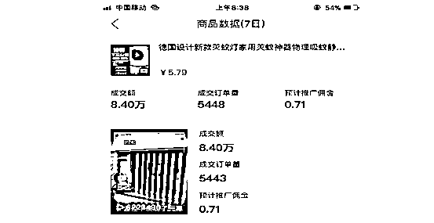
（爆单账号数据，佣金线下结算）
其实我们是鲁班爆的灭蚊灯，平均每天流水2-300万，同事就把爆单的视频，拿到了多多视频上面，也爆了，到这个时候，我也还是没太在意，因为多多上面卖了5000多单，佣金好像也就2-3000，但是员工的一句话点醒了我，他说：这个就是纯利，不要花广告费。
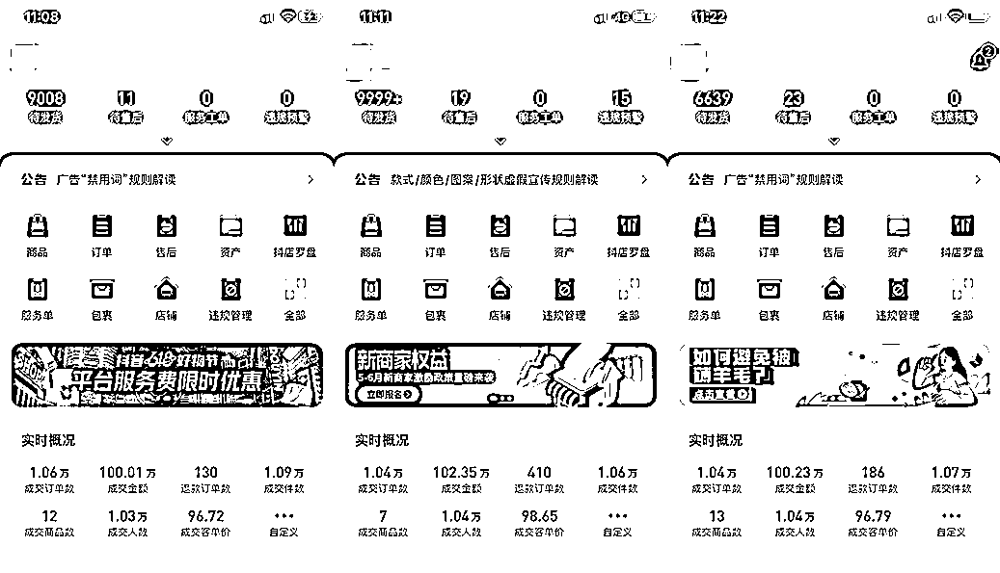
（部分抖店后台数据）
当然，了解投放的大哥们，应该都很在一个数值ROI，假如我想在千川做2000，并保证ROI在2左右的话，我的广告费起码要支出1000，而且还是在不算退货的情况下，细算了一下，我觉得有搞头，就去找了做多多视频的朋友，这次的碰面彻底打翻了我对多多视频的认知！
仅仅过去半年不到的时间，他月佣金收益，从几千已经到了小几万了，而且是个人操作，可以说是没啥成本，跟朋友深入聊了之后，就立刻回去跟做多多视频的小组开了个会，并把多多账号从十几个，开到了100多个，并开始主动了解多多视频的情况，加入了一些社群，学习到了一些新的玩法，当时真的是各种野路子，P图过认证，软件采集，软件发布，当然随着平台规则不断完善，这些玩法就优化掉了。
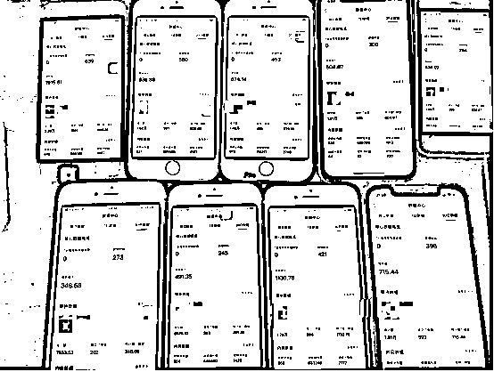
（公司部分账号）
我们一直坚持的是自己选品，手动发，因为团队有做二电的基因，所以选品上面没啥问题，我们也有一些第三方工具，比如风靡一时的EDX，和现在依然坚挺的有米云，当时的员工是一个人15个号，一部手机3个号，每人5部手机，鲁班的业务交给别的同事，allin多多视频，得到的效果还不错，虽然前期佣金不够发工资，但是慢慢的积累，这个项目我们3个月后，成功上岸了，平均每月的佣金在20万左右。
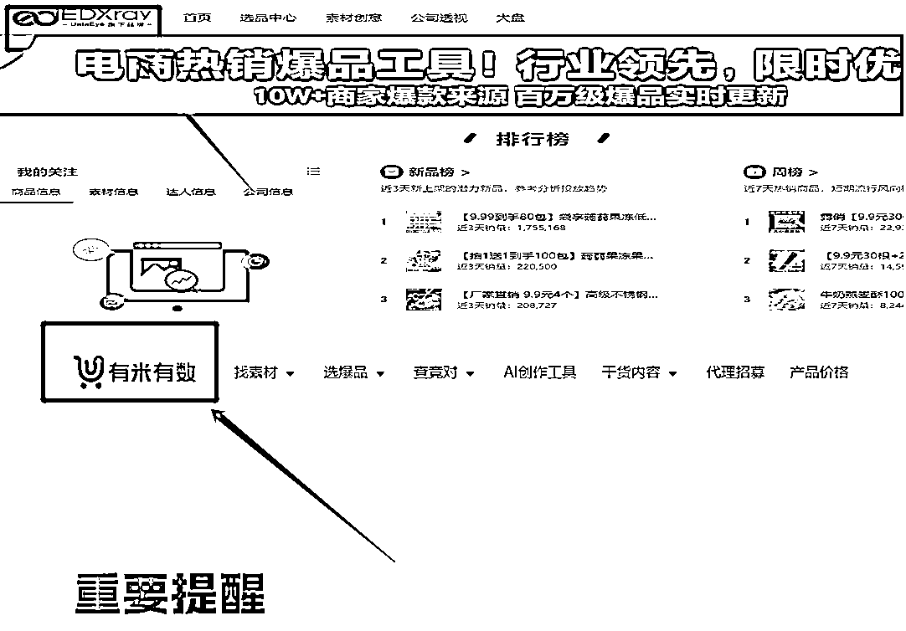
（EDX和有米云）
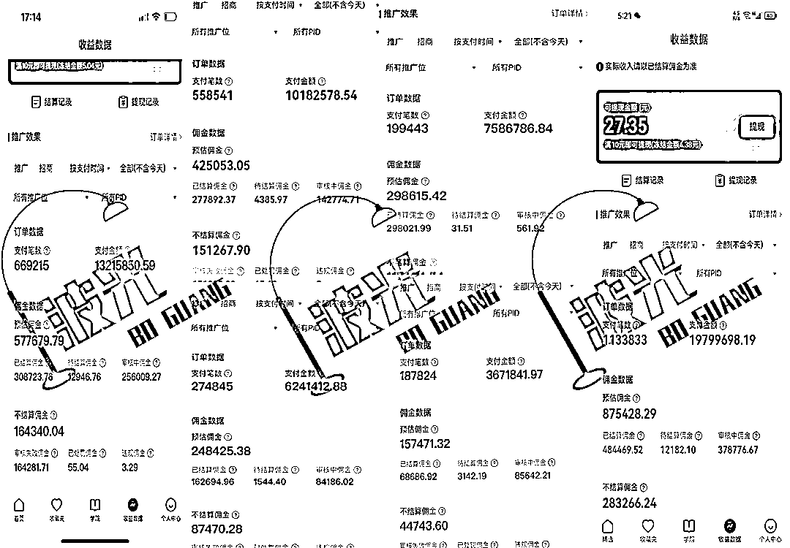
（部分佣金收益展示）
时间来到22年，我回到苏州，并在同年结识到了一位大佬，进入了门徒，后期对我的帮助很大，可能看到这里的小伙伴会骂我，逼逼赖赖到现在，不说一句怎么操作的，两点原因，一是没必要，以上说的都是我们经历过的1.0版本，现在已经迭代了，二是，淘金里面好多个大哥自己做多多视频，比我牛逼的多，对目前项目的分析，前景，以及项目的可持续性，写的比我好，想自己做多多的，建议去看一下那些大哥的分享，OK，我们继续。
（赚确定性的钱）
前些天，大佬写了篇文章，叫《赚确定性的钱》，之所以我们放弃了1.0版本的多多视频，就是想赚确定性的钱，当然当时不知道这个概念，只想怎么能在控制公司的成本上，放大多多视频，给大家梳理一个逻辑，首先要认清的是多多视频，一定能赚钱！
但是，我自己做，或者我团队做，有局限性，天花板低，而且随着涌入的玩家越来越多，不确定以后能赚钱了，只有用大量的人员，账号跟这个不确定性做对冲，从而继续在多多视频这个项目上，赚到确定性的钱。有了这个想法后，我把思路写满了一个白板，从前段引流，到赋能培训，结算交付，写的清清楚楚，底层逻辑很简单，招人，给他们赋能，然后分佣。
于是，我们开始干了，下面就是我如何通过操作，把多多视频放大，并转型成为多多MCN的老板的经历。
22年我们开始测试这个模式的时候，自己通过朋友圈的发送，以及公众号的推文，前前后后来了100来号人，到最后真正实操的人，只有40多位，当月这40多位达人，给我们带来了8000+的收益，平均单号收益在200元左右，
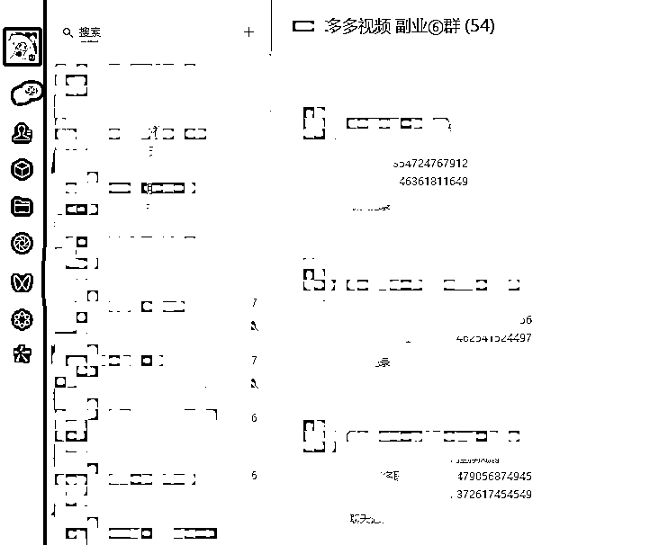
（在做的人40多）
虽然拿到了结果，但是这个人数远远不够，于是我们测试通过招聘的渠道，测试下来boss直聘的效果显著，半个月我们这边就涌入了3-400达人
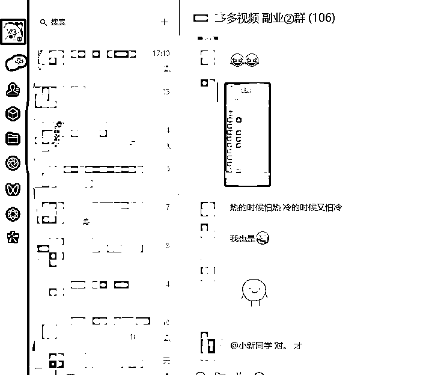
（第二批boss招来的人）
当然Boss直聘有利有弊
利：快速起盘，（死了7个营业执照测试出来的小技巧：我们也研究出Boss直聘的流量密码，新注册账号发布职位，不回复就会有很多人）
弊：boss封号，人群泛，转化低。我们测算了一下，在boss直聘聊100人，可以转化到微信群6-70人，详细了解过后，还想继续做的，只剩30人左右，总体转化率在30%左右。
但是架不出boss直聘流量大，不过要注意的是，boss直聘经常封号，不能发链接，和二维码，我们遇到过有1000多个消息还没来得及回复，就被嘎了。
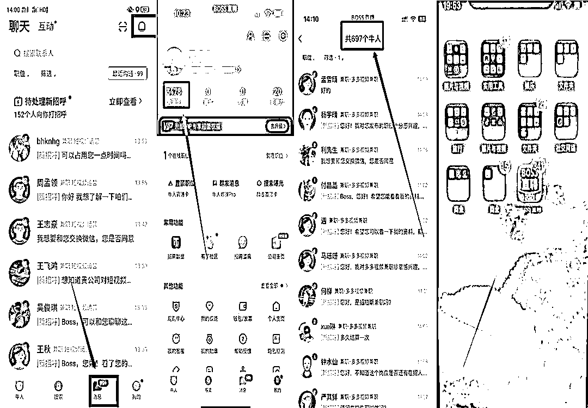
（部分合伙人的boss后台数据）
我们为了测试模式走不走得通，就没招很多人，BOOS上面筛筛选选，剩了200人左右，我们开始重新制作教学课程，文字教程，以及定期直播，上天还蛮眷顾我们的，第一个月这200人总收益在2万出头，比40人的平均值要低，我们分析了一下，可能是因为200人教育起来，比40人要繁琐，投入的时间精力也比较多，于是当月我们停止招聘，专心运营社群，次月收益达到了3万多，本身多多视频就需要积累，而且人越多，信息触达率就越低，所以我们也就释然了，不过，我感觉人生就像在不停的解决问题，解决一个问题，还有下个问题等你，运营社群的成本太大了，后续自己招人，盘子放大的话，我们的团队也得跟着增加成员，这就违背了我的初心，我想在现有的基础上，增加公司利润，于是一个邪念又涌上来了。
（学会分钱是大智慧）
我很清楚自己的短板，我管理不了5万人，我还管理不了50人么？
于是，我们在22年12月，又开启了多多视频3.0，正式进入多多视频被动收益阶段，这次我们把模式从招达人，改为招合伙人，我们只需要对合伙人负责，招聘的玩法，社群的维护，都由合伙人负责，我们把手里的佣金比例让出去一大半，就像上次在成都，盗哥说的一句话：tmd一个亿的盘子，你占1%就够了。我觉得很有道理，学会分钱是大智慧。
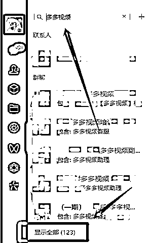
（目前有效社群80+）
这时候，我们团队又开始了新的规划，从人员分工，结算模式，到合伙人直接的规则，以及分润比例，具体的分润比例，这里不方便透露，望大家海涵，之前发视频的小姑娘，被我拉来做小助理，每天在群里回复消息，提供选品，解答问题。
到目前，我们团队链接了2-30位合伙人，账号也从几百暴增到了12000+，现在每天还以1-300的速度增长，
到这里，不知道会不会有人有疑虑，担不担心合伙人跑路的问题，这个是一定的，只能说每个人的选择不同，就像上次跟毛总沟通，他说：我知道波光在搞这个多多，虽然有认识其他团队也在做，但是我是不会跟别人合作的，因为我们是一个圈子的，而且他已经跑通了，我也懒得自己去捯饬一个什么拼多多MCN。当时听到感动的泪流满面。
但是格局这个东西不是每个人都有，所以我们的合伙人，全部都要签协议（除了圈子里的大哥们之外，哈哈）
并且达人必须要绑定在我们的机构下面。这样还有个好处，就是小助理可以及时发现爆单的达人，可以迅速反应，让达人补视频。
这里需要重点感谢我的好友木子田，也是门徒同学，当时跟他交流这个模式的时候，P话都没说，连分佣的事情都没问我，直接问我几号开始，到后来他跟我解释说，认可项目，各司其职，我给你推人，你给我变现，不过我也没有辜负他的信任，目前跟我们合作到了第四期，整个过程下来还是蛮开心的，并且还给我推了挺多玩私域的伙伴，到后来有更多的同学加入我们，包括毛先生（不知道他啥时候改名）。
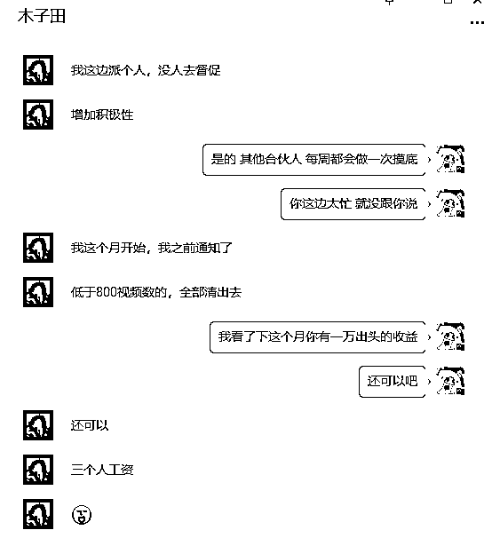
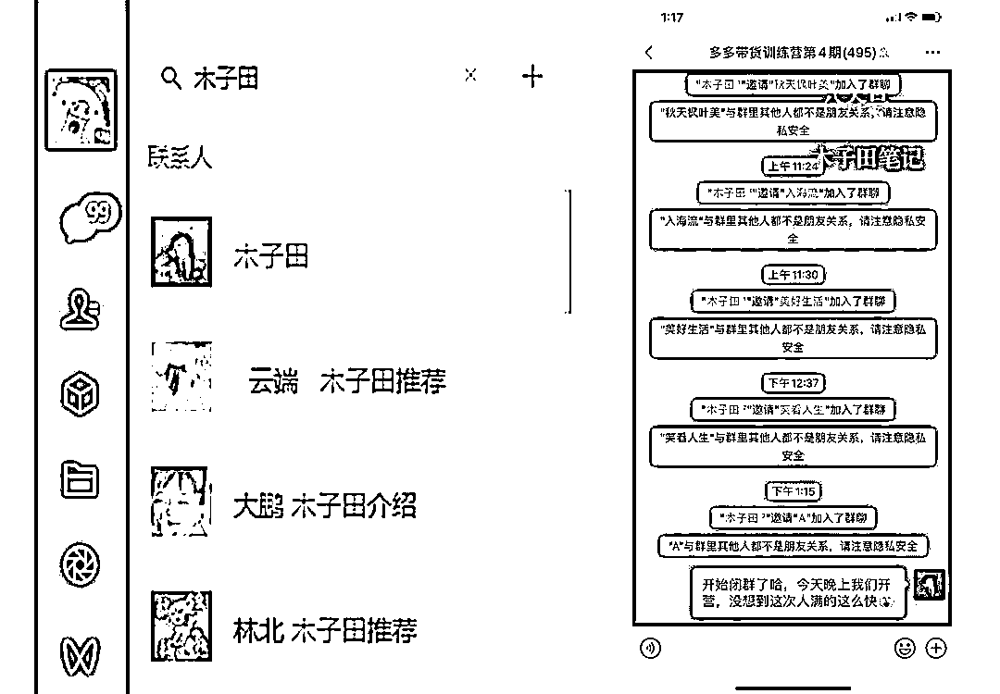
（好友木子田部分截图）
（毫无保留的分享）
下面我会把我们这个玩法的整个流程，一字不落的写下来，希望能够帮到一些志同道合的朋友。
首先需要一个拼多多自己的官方MCN平台，因为达人数量每天增加的很多，利用MCN可以进行统一管理，邀约，并自动绑定PID。
首先先注册一个拼多多MCN，地址：https://mcn.pinduoduo.com ，需要提供营业执照，一个手机号，法人身份证正反面，以及3个没有绑定过机构的多多号，这里我们没有多余的手机号给大家做演示了，大家可以跟着要求填内容就行。
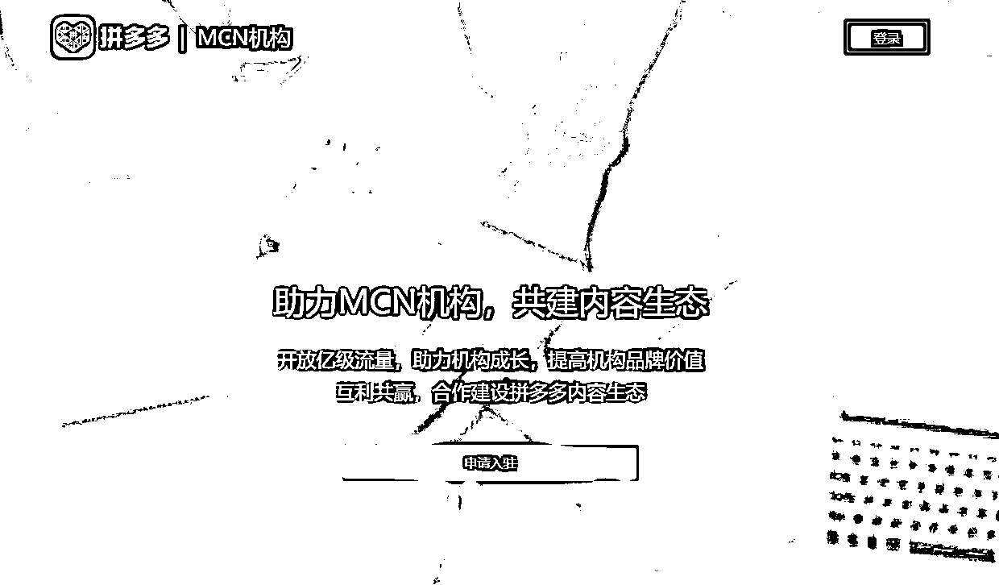
（MCN入驻界面）
MCN申请好之后，先要绑定多多进宝。
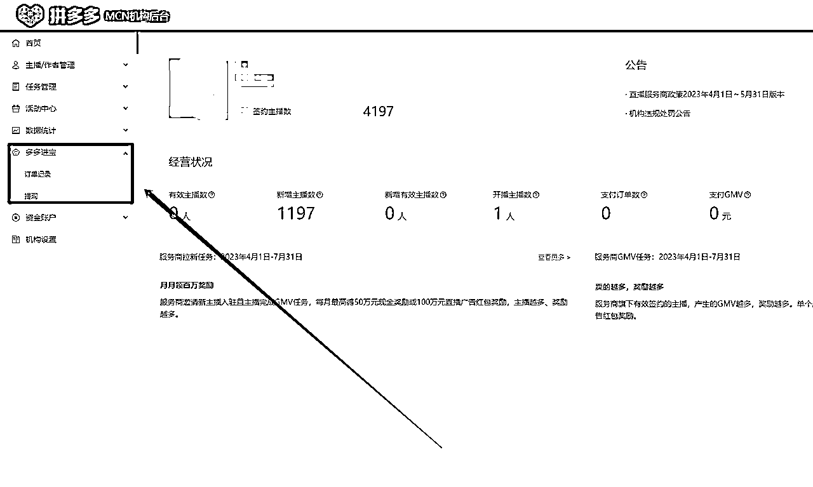
（绑定多多进宝）
多多进宝绑定完之后，就可以进行达人的正常邀约了，我用图片的形式给大家展示邀约流程。
我们测试了Boss直聘，招才猫直聘，赶集网，58同城，店长直聘，青桔同城，智联招聘，大概用了一个月的时间，总结出各个平台的优劣势
Boss直聘
优势：量大，没有之一！
劣势：需要这种认证，很烦，经常会封号，封公司，封法人，客服不鸟人。（可通过减少每天聊天频次，偶尔下架招聘信息，主动联系别人等方式，不发违规内容，比如连接，二维码等，降低封号的概率）
其它招聘平台
优势：客服很热情，天天打电话让你冲会员。
劣势：没量，价高，垃圾，呸！
通过我理性，公平公正且中肯的分析，大家应该知道选啥了吧。把达人引流到微信群，进行转化。
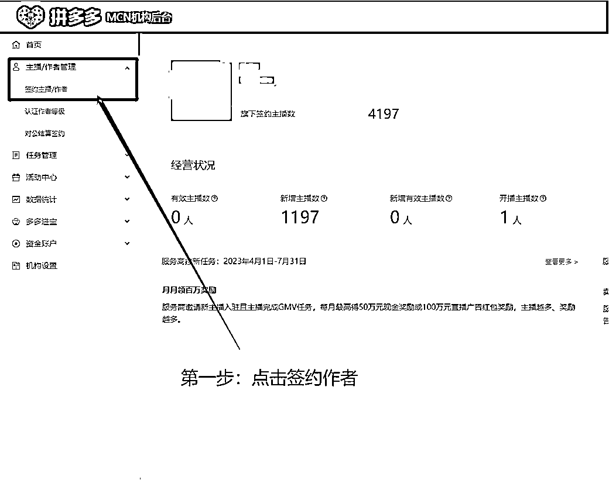
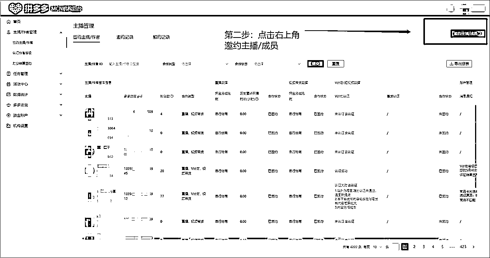
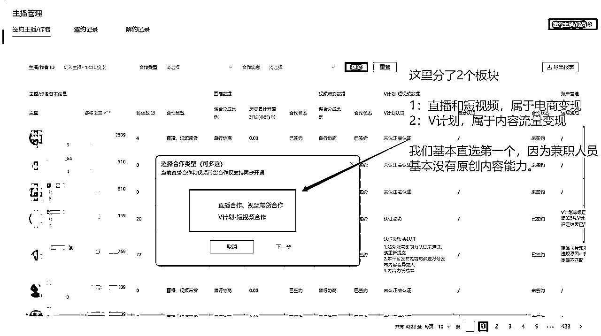
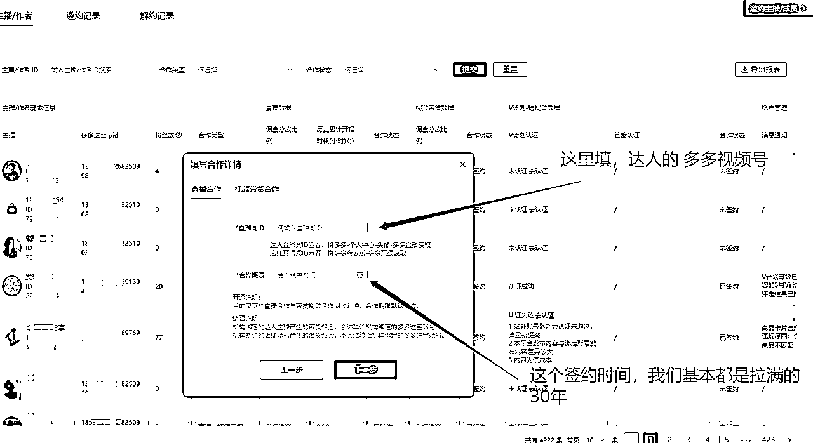
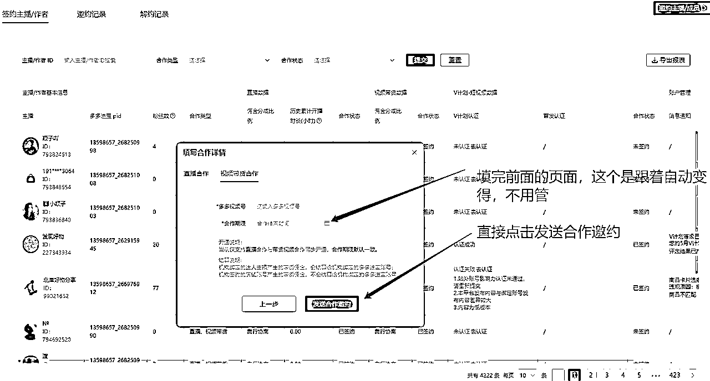
这里点击发送合作邀约，可能会出现6种情况！
1.邀约成功
2.账号未实名（需要达人端实名账号，一个达人可以实名6个多多号）
3.未找到该账户（两个原因：1是达人复制错多多视频号，2是输入的时候有空格）
4.该账户已绑定其他机构
5.该账户已绑定机构（这个是已经绑过机构，达人并且已经同意加入，再次邀约就会出现这个情况）
6.重复的邀约（已经邀约过该账户，达人并未同意，再次邀约就会出现这个情况）
这样我们这边的整个邀约环节就结束了，下面是达人端需要配合的动作。
达人这边很简单，其实只需要做3个动作，分别是实名，发2个视频，以及同意签约机构。下面给大家以图片的形式展现流程。
1.实名
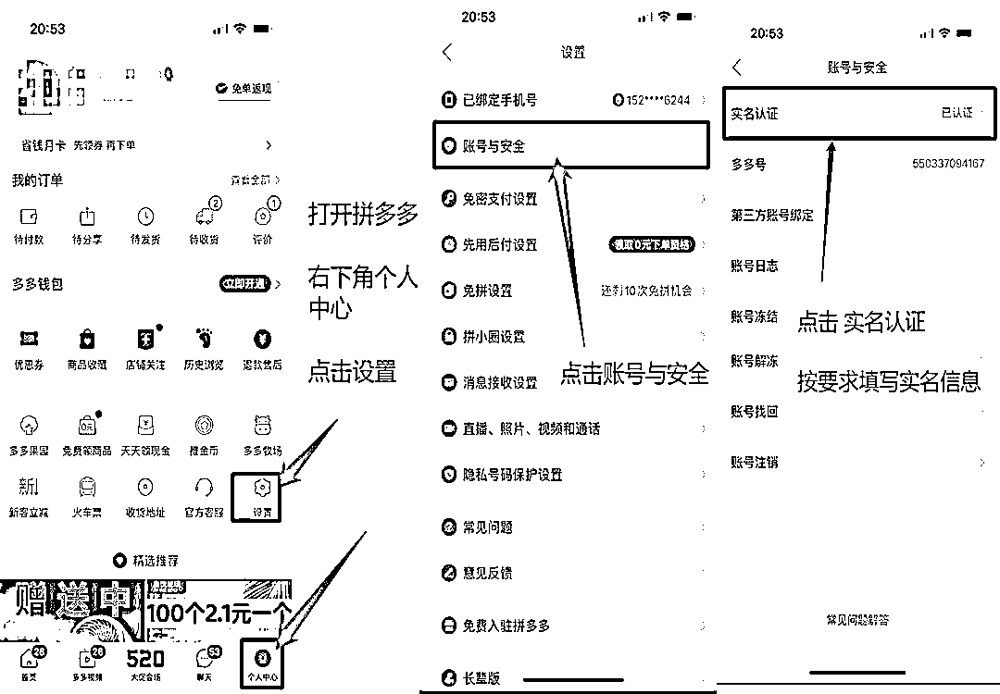
2.发2个视频，这里的发的视频，不能是图片生成的
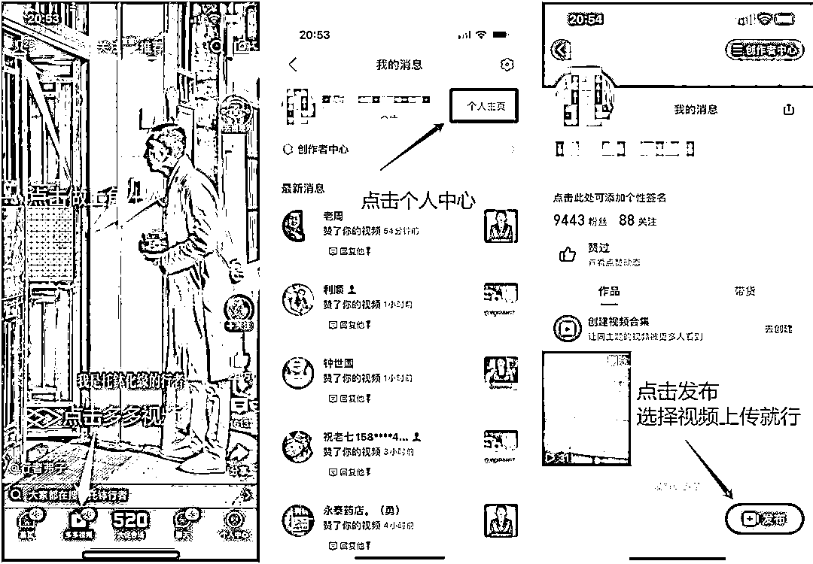
3.同意邀约
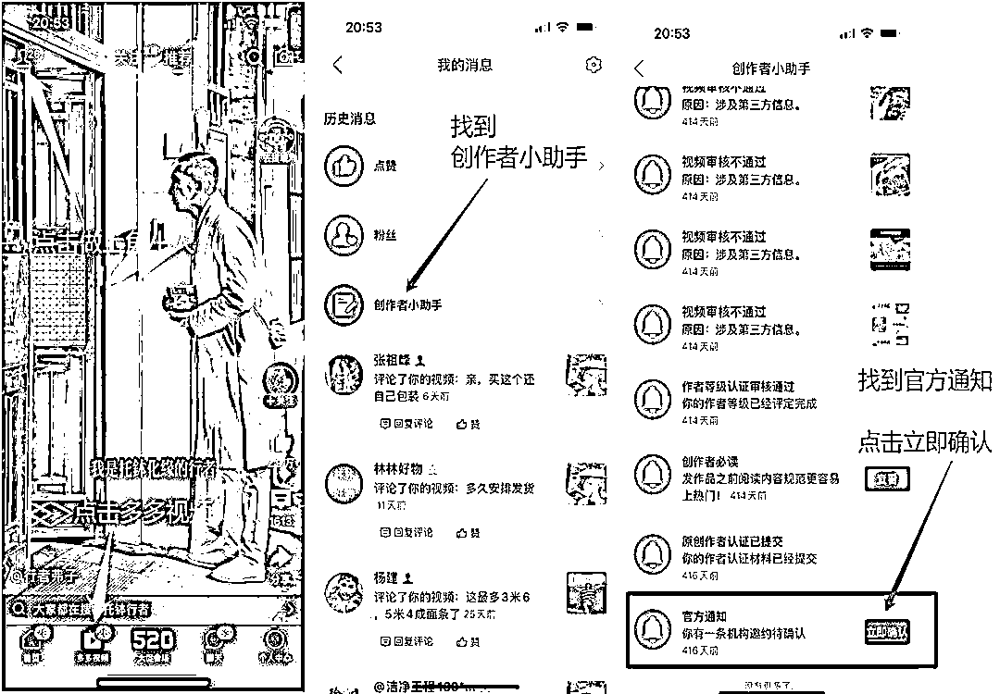
到这里，达人同意邀约之后，整个的邀约流程就完成了。
目前我们团队20人左右，负责多多视频项目的9人，其中3人负责选品，以及公司剩余账号的更新，由于大部分精力投入在MCN上面，团队自身账号数量减少，佣金也在变低，3人负责小助理的工作，达人机构的邀约，解约（每月高峰期要忙到晚上11点多），及群里达人问题的解答，线下结算商品的投喂，人事一枚，负责我们直招达人，或者是合伙人，还有一个我，负责定期直播，合伙人的对接，主持合伙人的定期会议，最后一个财务兼职商务，负责对接线下结算的商家，达人佣金的核算，以及打款。
这里可能有人要问，这个小破项目为啥需要这么多人，我自己做多多，或者我团队做多多都没这么多人，首先是因为玩法不一样，其次是这个盘子需要大量的达人，我们需要对应的后端服务人员，多多带货视频是没啥基础的，就是量大出奇迹，就怼量就完事了，出爆款概率可能就是10%，但是达人的号到了一定程度之后，这个概率就是100%的，不然招几十上百个人，没啥意思，不如我们团队自己发视频赚的多。
项目说白了，就是需要大量上人，达人来来走走是正常，我们想做的就是通过赋能，让他们收益增加，增强达人的黏性。
签约后的达人只需要按照，多多视频的正常流程操作就可以，先获取下个月的带货资格，也就是50个热门爆款，这里我们会给达人提供过爆款的产品，以及我们公司上万个积累的视频。
等到次月达人拥有带货资格之后，我会每周给达人直播，赋能选品思路，每天提供出单几率比较大的商品ID，以及对应的视频，达人没空自己选品的时候，就可以直接用我们每天提供的选品以及视频。
（老图新用，这个就是每天投喂的记录）
其实聊到这里，仅仅是大家明面上能看到的收益，我们还在跟上百个商家深度合作，有些品可以直接走线下结算，不用被平台扣掉10%的佣金，官方也在对MCN进行各种扶持，当然，针对内容流量和直播方面的比较多，关于带货部分近期跟官方沟通，后面是有相对应的扶持政策，正在规划中。
关于前段引流方面，我们也开始探索跟自带私域的博主链接，并且也拿到了不错的结果，跟他们合作有很大的好处，就是他们的私域执行力没的说，多多项目最需要的就是执行力，还有就是没有很小白的人，比如，我就没有遇到过他们不会实名的，虽然听起来很小的一件事，boss来的人真的有不少人不会。
另外我们每周五合伙人都有固定会议，互相了解一下近况，以及同步自己的最新玩法，比如招聘思路，以及选品思路等等。
关于多多视频我们踩过的坑有很多，这里我就挑选几个，最容易出现的坑
1.被拼多多品牌影响，忽略多多视频的价值，错过了个人玩法的最佳红利期。
2.前期不懂boss直聘的招聘规则，被封了几十个营业执照，加上十几个法人，以及营业执照。
3.前端大量进人，后端没有更多的微信号承接，导致微信号被添加频繁（这一直是我们在攻克的问题）。
4.合伙人单飞，需要完善合伙人制度，给予合伙人更多的能量，增强自身竞争力。
前方的路还有很长，还有更多的问题需要我们去解决，不过我相信我们团队会在这条路上，走的越来越好！
最后简单放一些的达人单日的收益。
（请允许我打码，哈哈哈）
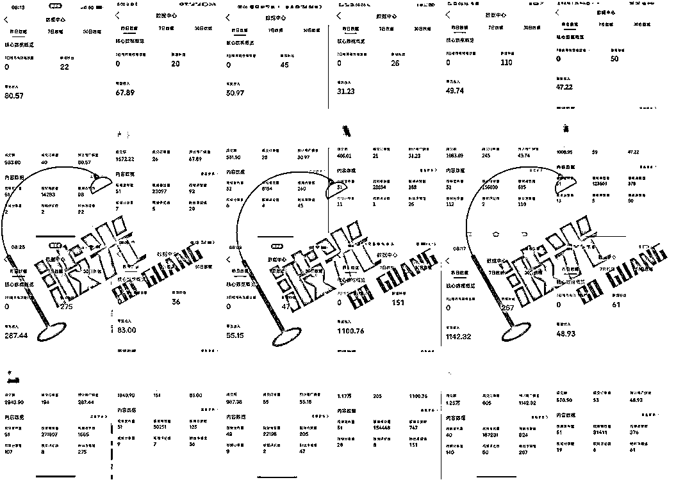
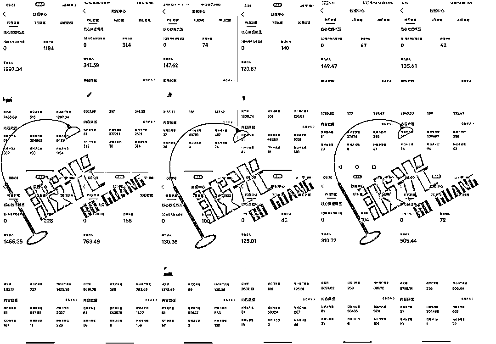
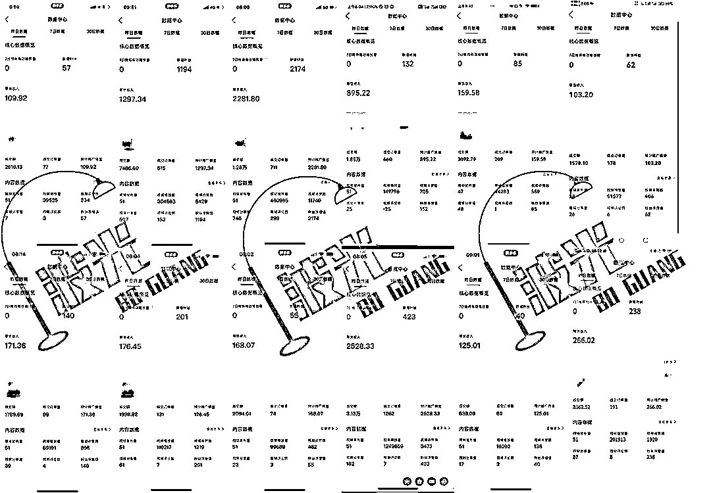
（模式，让我真正开心）
最近我在思考，现在项目在朝着一个好的方向发展，但让我真正开心的，到底是多多视频项目本身，还是这个模式，所以就联系了另外一位门徒同学，马浩，我们经常一起聊天，也是一位在自己行业成功上岸的大哥，他跟我说：我所以跟你做这个事，有两点，一是看中人，二是商业模式。从中我得到了有效的信息，说人，是人情世故，说商业模式，才是核心思想，也就是说，多多视频，只是这个模式里面的产品，假如多多视频不行了，我们可以把产品换成另一个平台，模式一样是不变的，当然，我们很渺小，还达不到高谈阔论什么商业模式，目前还不配，不过我们正在不断学习，努力成为强者。
好了，感谢看完絮絮叨叨满篇废话的你。
一个人走得很快，一群人才走的更远！
我是波光，一个虽然肚子很大，但是四肢很短的矮胖子。